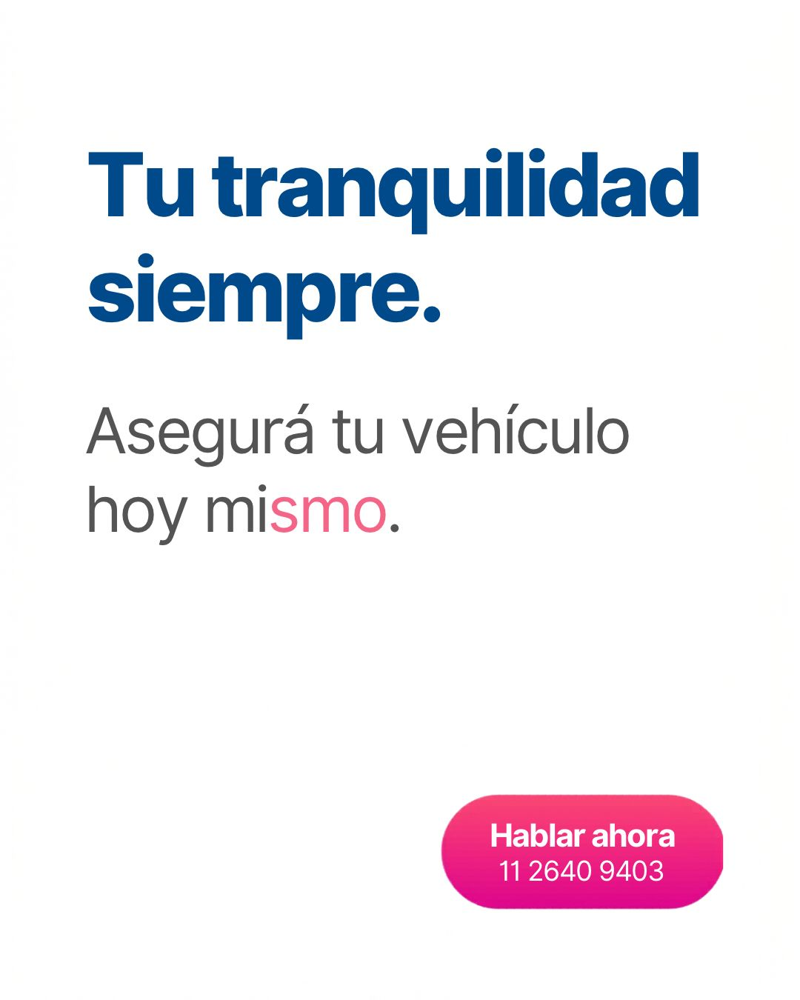

Grúas y remolques
Unidades para traslados, remolque y servicios compatibles según vehículo.
Buscamos grúas, unidades de auxilio, motoqueros y prestadores de asistencia vehicular para ampliar la capacidad operativa en distintas zonas.

La disponibilidad se coordina según zona, tipo de unidad y modalidad de servicio.
Unidades para traslados, remolque y servicios compatibles según vehículo.
Prestadores para asistencias mecánicas, batería y resolución de contingencias en calle.
Servicios rápidos, traslado de elementos, verificaciones y apoyo a unidades de auxilio.
Asistencia relacionada con neumáticos y contingencias que puedan resolverse en el lugar.
Prestadores con capacidad para necesidades específicas, sujeto a validación operativa.
Incorporación de prestadores en CABA, AMBA, provincia de Buenos Aires e interior.
Escribinos por WhatsApp indicando localidad, tipo de unidad o servicio y zona de cobertura.
Contactar incorporación